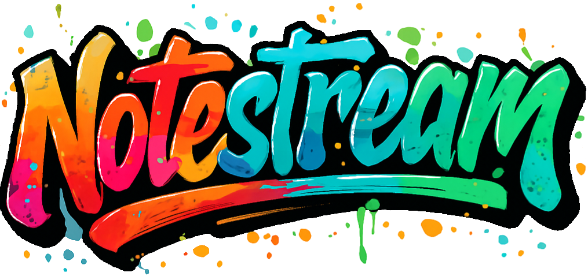

Mina spellistor
Hämtar dina spellistor...
Lägg till en Spotify-spellista
Förbereder...
I Spotify: öppna spellistan, välj Dela och Kopiera länk till spellista. Listan måste vara offentlig.
Registrering misslyckades!
Har du redan ett konto?

Hämtar dina spellistor...
I Spotify: öppna spellistan, välj Dela och Kopiera länk till spellista. Listan måste vara offentlig.